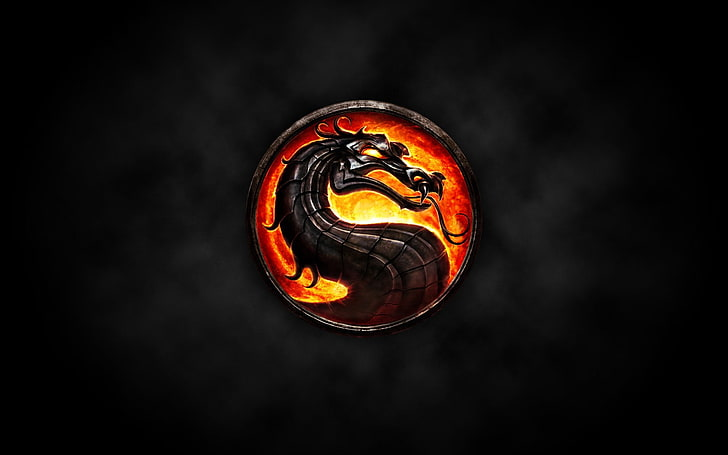

En su momento atrajo mucha atención por su violencia extrema y sus gráficos digitalizados. Excepto Goro y algunos otros personajes no humanos, cada luchador era un actor humano con sus movimientos recapturados e incorporados en el juego. Este estilo gráfico terminó en Mortal Kombat 4, porque los primeros videojuegos de Mortal Kombat surgieron mucho antes de la aparición de los gráficos en 3D de las consolas de cuarta generación (Nintendo 64 y PlayStation), en la época en la que los videojuegos estaban orientados casi en su totalidad para niños y tenían en su gran mayoría nulos contenidos de violencia.
Cada luchador tiene su propia historia para participar en el torneo Mortal Kombat. Cada uno tiene sus propios movimientos de pelea cuerpo a cuerpo, algunos usan movimientos que contienen magia, armas, cuchillos, etc. Existen algunos movimientos para rematar a los rivales a punto de ser noqueados, incluyen brutales descuartizamientos, decapitaciones, incineraciones, explosiones, etc. llamados fatalities, aunque hay otras variedades como babalities (convertir al oponente en bebé), friendships (en vez de matar al oponente, se hace alguna broma o gracia), animalities (el vencedor se convierte en animal y elimina violentamente al contrincante), y brutallities (una salvaje paliza hasta que el oponente es desmembrado). Los personajes son ya iconos de la cultura del videojuego, y se han adaptado historietas, series de televisión y películas sobre ellos.
Cabe destacar la significativa evolución del sistema de combate desde Mortal Kombat Trilogy, que realiza movimientos y golpes, pero sin distinguir el arte marcial del luchador; esto terminó con la aparición de Mortal Kombat: Deadly Alliance.

- Controversia
Esta serie es conocida como una de las más controvertidas de las últimas décadas. El juego muchas veces presenta sangre y movimientos brutales así como desnudez parcial. En Mortal Kombat (2011) se desató una polémica sexista por los personajes femeninos que se encontraban supuestamente "semidesnudas" y con cuerpos voluptuosos, además de poseer roles torpes y poco importantes para la trama, en Mortal Kombat X esto fue corregido, pues las mujeres portan ropa menos reveladora así como una notable disminución en sus atributos trayendo consigo roles protagónicos para la historia.